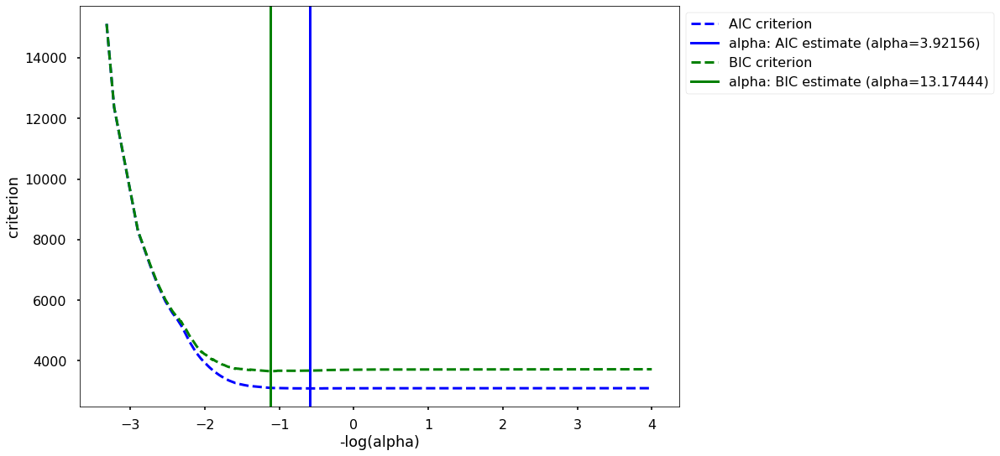

Topic 24: Feature Selection & Regularization (Ridge and Lasso Regression)#
onl01-dtsc-ft-022221
05/05/21
Questions#
Conceptually, what is fit_transform doing? Is it fitting a line to the data points? Then is transform examining the error between the fitted line and the actual data points?
What are the differences between “MinMaxScaler”, “scale” and “StandardScaler” and what are their use cases?
When using lasso.score( ) is it running a linear regression analysis behind the scenes?
At what point on the train/test cost curve would optimal alpha represent? The minimum?
Objectives#
DISCUSSION:
Discuss Regularization Techniques
Ridge Regression (L2 normalization)
Lasso Regression (L1 normalization)
Activity: Practice turning repetitive and rigid code into flexible/reusable code.
Discuss using AIC/BIC
Activity: Modeling the Phase 2 Project Data Set with regularization and proper train-test-split/model validation.
Compare Feature Selection methods (If there’s time)
Will revisit during project week.
Addressing Overfit Models with Regularization#
Regularization techniques#
We can apply “regularization techniques” to prevent out models from being overly dominated by a small number of features that leads to overfitting.
“Regularization: is a general term used when one tries to battle overfitting.
Lasso and Ridge are two commonly used so-called regularization techniques.
There are multiple advantages to using these methods:
They reduce model complexity
The may prevent from overfitting
Some of them may perform feature selection at the same time (when coefficients are set to 0)
They can be used to counter multicollinearity
Penalized Estimation#
You’ve seen that when the number of predictors increases, your model complexity increases, with a higher chance of overfitting as a result.
We can reduce the values of the coefficients to make them less sensitive to noise in the data.
This is called penalized estimation.
Ridge and Lasso regression are two examples of penalized estimation. - They both use a similar technique of adding an additional element to the cost function calculation. - The difference between ridge and lasso is based on the term that they add to the cost function.
Linear Regression Cost Function Previously Used (RSS)#
For a single predictor (X)#
multiple predictors, the equation becomes:#
where \(k\) is the number of predictors
and \(j\) is each individual predictor.
Ridge Regression - L2 Norm Regularization#
Define a penalty hyperparameter \(\lambda\) for extra terms (large \(m\))
Error term added to cost function
\(\large ... + \lambda \sum_{i=1}^n m_i^2\)
Notice that \(m_i^2\) is squared, hence “L2 norm regularization”
By adding the penalty term \(\lambda\), ridge regression puts a constraint on the coefficients \(m\).
Therefore, large coefficients will penalize the optimization function.
This shrinks the coefficients and helps to reduce model complexity and multicollinearity.
With two predictors there is a penalty term m for each predictor. $\(\large J_\text{ridge}= \sum_{i=1}^n(y_i - \hat{y})^2 = \)$
Uses#
Used mostly to prevent overfitting (but since includes all features it can be computationally expensive (for many variables))
Lasso Regression - L1 Norm Regularization#
“Least Absolute Shrinkage and Selection Operator”
Error term added to cost function
\( \large ... + \lambda \sum_{j=1}^p \mid m_j \mid\)
Notice that \(m\) has no exponent (meaning its actually \(m^1\), hence “L1 norm regularization”
If you have two predictors the full equation would look like this (notice that there is a penalty term m for each predictor in the model - in this case, two):
$\( \text{cost_function_lasso}= \sum_{i=1}^n(y_i - \hat{y})^2 = \)$
Uses#
Lasso also helps with over fitting
Lasso shrinks the less important features’ coefficients to zero, removing them altogether.
Therefore, Lasso regression can be used for feature selection
Using Regularization#
Make sure to standardize the data before performing ridge or lasso regression, otherwise features with large values/units will be unfairly penalized.
Fit-transform the training data, only transform the test data
from sklearn.preprocessing import MinMaxScaler
from sklearn.linear_model import Lasso, Ridge, LinearRegression
Ridge & Lasson Regression Summary:#
In Ridge regression, the cost function is changed by adding a penalty term to the square of the magnitude of the coefficients.
Lasso regression is very similar to Ridge regression, except that the magnitude of the coefficients are not squared in the penalty term.
Applying Ridge and Lasso Regression with Scikit-Learn:#
Examining The Canvas Ridge and Lasso Regression Lesson Code#
First, let’s examine the code used in the Ridge and Lasso Regression Lesson
import pandas as pd
import numpy as np
import matplotlib.pyplot as plt
import seaborn as sns
plt.style.use('seaborn-poster')
from sklearn.preprocessing import MinMaxScaler
from sklearn.linear_model import Lasso, Ridge, LinearRegression
from sklearn.model_selection import train_test_split
## Load the data
df = pd.read_csv('https://raw.githubusercontent.com/learn-co-curriculum/dsc-ridge-and-lasso-regression/master/auto-mpg.csv')
y = df[['mpg']]
X = df.drop(['mpg', 'car name', 'origin'], axis=1)
# Perform test train split
X_train , X_test, y_train, y_test = train_test_split(X, y, test_size=0.3,
random_state=12)
[var.shape for var in [X_train , X_test, y_train, y_test]]
[(274, 6), (118, 6), (274, 1), (118, 1)]
scale = MinMaxScaler()
X_train_tf = scale.fit_transform(X_train)
X_test_tf = scale.transform(X_test)
# Build a Ridge, Lasso and regular linear regression model
# Note that in scikit-learn, the regularization parameter is denoted by alpha (and not lambda)
ridge = Ridge(alpha=0.5)
ridge.fit(X_train_tf, y_train)
lasso = Lasso(alpha=0.5)
lasso.fit(X_train_tf, y_train)
lin = LinearRegression()
lin.fit(X_train_tf, y_train)
LinearRegression()
# Generate preditions for training and test sets
y_h_ridge_train = ridge.predict(X_train_tf)
y_h_ridge_test = ridge.predict(X_test_tf)
y_h_lasso_train = np.reshape(lasso.predict(X_train_transformed), (274, 1))
y_h_lasso_test = np.reshape(lasso.predict(X_test_transformed), (118, 1))
y_h_lin_train = lin.predict(X_train_tf)
y_h_lin_test = lin.predict(X_test_tf)
print('Train Error Ridge Model', np.sum((y_train - y_h_ridge_train)**2))
print('Test Error Ridge Model', np.sum((y_test - y_h_ridge_test)**2))
print('\n')
print('Train Error Lasso Model', np.sum((y_train - y_h_lasso_train)**2))
print('Test Error Lasso Model', np.sum((y_test - y_h_lasso_test)**2))
print('\n')
print('Train Error Unpenalized Linear Model', np.sum((y_train - lin.predict(X_train_tf))**2))
print('Test Error Unpenalized Linear Model', np.sum((y_test - lin.predict(X_test_tf))**2))
print('\n'*3)
print('Ridge parameter coefficients:\n', ridge.coef_)
print('Lasso parameter coefficients:\n', lasso.coef_)
print('Linear model parameter coefficients:\n', lin.coef_)
Train Error Ridge Model mpg 2684.673787
dtype: float64
Test Error Ridge Model mpg 2067.795707
dtype: float64
Train Error Lasso Model mpg 4450.979518
dtype: float64
Test Error Lasso Model mpg 3544.087085
dtype: float64
Train Error Unpenalized Linear Model mpg 2658.043444
dtype: float64
Test Error Unpenalized Linear Model mpg 1976.266987
dtype: float64
Ridge parameter coefficients:
[[ -2.06904445 -2.88593443 -1.81801505 -15.23785349 -1.45594148
8.1440177 ]]
Lasso parameter coefficients:
[-9.09743525 -0. -0. -4.02703963 0. 3.92348219]
Linear model parameter coefficients:
[[ -1.33790698 -1.05300843 -0.08661412 -19.26724989 -0.37043697
8.56051229]]
Examining the code above…#
Q1: What are the issues/limitations of the way we tested/compared the 3 different types of models?#
A1:#
If we wanted to add another model type, we’d have to copy a lot and edit a lot.
Q2: What other limitation does the above code have? (what is inflexible?)#
A2:#
hard coded values for data shapes
Q3: Whats the solution?#
A3:#
Functions, and loops, and dictionaries!
Updating the Official Lesson’s Code:#
from sklearn.metrics import r2_score, mean_squared_error
def fit_model(model,X_train, X_test,y_train,y_test):
model.fit(X_train, y_train)
# Generate preditions for training and test sets
y_hat_train = model.predict(X_train)
y_hat_test = model.predict(X_test)
rmse_train = mean_squared_error(y_train, y_hat_train,squared=False)
rmse_test = mean_squared_error(y_test, y_hat_test,squared=False)
r2_train = r2_score(y_train,y_hat_train)
r2_test = r2_score(y_test,y_hat_test)
res = [['Data','R2','RMSE']]
res.append(['Train',r2_train,rmse_train])
res.append(['Test',r2_test,rmse_test])
res_df = pd.DataFrame(res[1:],columns =res[0]).round(3)
return res_df, model
## Test our function
res_df, linreg = fit_model(LinearRegression(),X_train_tf, X_test_tf,y_train,y_test)
res_df
| Data | R2 | RMSE | |
|---|---|---|---|
| 0 | Train | 0.820 | 3.115 |
| 1 | Test | 0.773 | 4.092 |
Adding Extracting Model Coefficents#
## Getting the model's coeffs and intercept
print(linreg.coef_.shape)
linreg.coef_[0]
(1, 6)
array([ -1.33790698, -1.05300843, -0.08661412, -19.26724989,
-0.37043697, 8.56051229])
linreg.intercept_
array([27.8810372])
## Make a series of coefficients (including intercept)
coeffs = pd.Series(linreg.coef_.flatten(), index=X_train.columns)
coeffs['intercept'] = linreg.intercept_[0]
coeffs
cylinders -1.337907
displacement -1.053008
horsepower -0.086614
weight -19.267250
acceleration -0.370437
model year 8.560512
intercept 27.881037
dtype: float64
## Turn get_coefficients into function
def get_coefficients(model,X_train):
coeffs = pd.Series(model.coef_.flatten(), index=X_train.columns)
coeffs['intercept'] = model.intercept_[0]
return coeffs
## Test our function
coeffs = get_coefficients(linreg,X_train)
coeffs
cylinders -1.337907
displacement -1.053008
horsepower -0.086614
weight -19.267250
acceleration -0.370437
model year 8.560512
intercept 27.881037
dtype: float64
Since we know we want to apply the same process to 3 Models…#
## Use a dictionary to store our models
models_to_make = dict( ridge = Ridge(alpha=0.5),
lasso = Lasso(alpha=0.5),
lin = LinearRegression())
models_to_make
{'ridge': Ridge(alpha=0.5),
'lasso': Lasso(alpha=0.5),
'lin': LinearRegression()}
## Test our dictionary's entry for lasso
models_to_make['lasso']
Lasso(alpha=0.5)
Now, loop through models_to_make and save all results
## Loop through models_to_make and save all results
## Create an empty list to store result dfs
results = []
## Create an empty dict to store fit models
fit_models={}
## Loop through the model_type and model from models_to_make
for model_type,model in models_to_make.items():
## get model results and fit model using make_model
res_df, f_model = fit_model(model,X_train_tf, X_test_tf,y_train,y_test)
## Add model type as column to res
res_df['Model Type'] = model_type
## Save df to list
results.append(res_df)
## Save fit model to models dict
fit_models[model_type] = f_model
## Concatenate results and set Type/data as index
df_res = pd.concat(results)
df_res = df_res.set_index(['Model Type','Data'])
df_res
| R2 | RMSE | ||
|---|---|---|---|
| Model Type | Data | ||
| ridge | Train | 0.819 | 3.130 |
| Test | 0.763 | 4.186 | |
| lasso | Train | 0.699 | 4.030 |
| Test | 0.594 | 5.480 | |
| lin | Train | 0.820 | 3.115 |
| Test | 0.773 | 4.092 |
## Use styling to make it easier to find the best scores.
df_res.style.background_gradient(subset=['R2'])
| R2 | RMSE | ||
|---|---|---|---|
| Model Type | Data | ||
| ridge | Train | 0.819000 | 3.130000 |
| Test | 0.763000 | 4.186000 | |
| lasso | Train | 0.699000 | 4.030000 |
| Test | 0.594000 | 5.480000 | |
| lin | Train | 0.820000 | 3.115000 |
| Test | 0.773000 | 4.092000 |
get_coefficients
<function __main__.get_coefficients(model, X_train)>
## Get the coefficients of every model in a dictionary using a dict comprehension
coeffs_dict = {name:get_coefficients(mod,X_train) for name, mod in fit_models.items()}
coeffs_dict
{'ridge': cylinders -2.069044
displacement -2.885934
horsepower -1.818015
weight -15.237853
acceleration -1.455941
model year 8.144018
intercept 28.488448
dtype: float64,
'lasso': cylinders -9.097435
displacement -0.000000
horsepower -0.000000
weight -4.027040
acceleration 0.000000
model year 3.923482
intercept 27.192308
dtype: float64,
'lin': cylinders -1.337907
displacement -1.053008
horsepower -0.086614
weight -19.267250
acceleration -0.370437
model year 8.560512
intercept 27.881037
dtype: float64}
## Make into a dataframe and transpose to compare coeffs.
coeffs_df = pd.DataFrame(coeffs_dict).T.round(3)
coeffs_df.style.background_gradient()
| cylinders | displacement | horsepower | weight | acceleration | model year | intercept | |
|---|---|---|---|---|---|---|---|
| ridge | -2.069000 | -2.886000 | -1.818000 | -15.238000 | -1.456000 | 8.144000 | 28.488000 |
| lasso | -9.097000 | -0.000000 | -0.000000 | -4.027000 | 0.000000 | 3.923000 | 27.192000 |
| lin | -1.338000 | -1.053000 | -0.087000 | -19.267000 | -0.370000 | 8.561000 | 27.881000 |
coeffs = coeffs_dict['lasso']
removed_features = coeffs[coeffs==0].index
removed_features
Index(['displacement', 'horsepower', 'acceleration'], dtype='object')
Discussion: what was the result of the different regressions on the coefficients?#
lasso regression shrunk some of the coefficients down to 0
Akaike Information Criterion (AIC) and Bayesian Information Criterion (BIC)#
Uses of AIC and BIC#
Performing feature selection: comparing models with only a few variables and more variables, computing the AIC/BIC and select the features that generated the lowest AIC or BIC
Similarly, selecting or not selecting interactions/polynomial features depending on whether or not the AIC/BIC decreases when adding them in
Computing the AIC and BIC for several values of the regularization parameter in Ridge/Lasso models and selecting the best regularization parameter, and many more!
Akaike’s Information Criterion (AIC)#
The formula for the AIC, invented by Hirotugu Akaike in 1973 and short for “Akaike’s Information Criterion” is given by:
Where:
\(k\) : length of the parameter space (i.e. the number of features)
\(\hat{L}\) : the maximum value of the likelihood function for the model
Another way to phrase the equation is:
AIC used to compare models with unbounded units not independently interpretable
If model uses Maximum Likelihood Estimation, log-likelihood is automatically computed, so AIC is easy to calculate.
AIC acts like penalized log-likelihood criterion, balancing good fit and complexity
In Python, the AIC is built into
statsmodelsand insklearn(such asLassoLarsIC, which you’ll use in the upcoming lab).
Bayesian Information Criterion (BIC)#
Bayesian alternative to AIC, used the same way.
where:
\(\hat{L}\) and \(k\) are the same as in AIC
\(n\) : the number of data points (the sample size)
Another way to phrase the equation is:
from sklearn.linear_model import LassoCV, LassoLarsCV, LassoLarsIC
# alphas = np.arange(0.1,100,0.1)
lasso_cvA = LassoLarsIC(criterion='aic')
lasso_cvA.fit(X_train_tf,y_train);
lasso_cvA.alpha_
/opt/anaconda3/envs/learn-env-new/lib/python3.8/site-packages/sklearn/utils/validation.py:72: DataConversionWarning: A column-vector y was passed when a 1d array was expected. Please change the shape of y to (n_samples, ), for example using ravel().
return f(**kwargs)
0.0014054034490563368
lasso = Lasso(alpha=lasso_cvA.alpha_)
res_df, model = fit_model(lasso,X_train_tf,X_test_tf, y_train,y_test)
res_df
| Data | R2 | RMSE | |
|---|---|---|---|
| 0 | Train | 0.820 | 3.115 |
| 1 | Test | 0.774 | 4.091 |
res_df, lassocv = fit_model(LassoCV(),X_train_tf,X_test_tf, y_train,y_test)
lassocv.alpha_
/opt/anaconda3/envs/learn-env-new/lib/python3.8/site-packages/sklearn/utils/validation.py:72: DataConversionWarning: A column-vector y was passed when a 1d array was expected. Please change the shape of y to (n_samples, ), for example using ravel().
return f(**kwargs)
0.049573168606133394
coeffs_df.loc['LassoCV'] = get_coefficients(lasso, X_train)
coeffs_df
| cylinders | displacement | horsepower | weight | acceleration | model year | intercept | |
|---|---|---|---|---|---|---|---|
| ridge | -2.069000 | -2.886000 | -1.818 | -15.238000 | -1.456000 | 8.144000 | 28.488000 |
| lasso | -9.097000 | -0.000000 | -0.000 | -4.027000 | 0.000000 | 3.923000 | 27.192000 |
| lin | -1.338000 | -1.053000 | -0.087 | -19.267000 | -0.370000 | 8.561000 | 27.881000 |
| LassoCV | -1.373098 | -0.960136 | -0.000 | -19.320186 | -0.228123 | 8.553073 | 27.797187 |
get_coefficients(lasso, X_train)
cylinders -1.373098
displacement -0.960136
horsepower -0.000000
weight -19.320186
acceleration -0.228123
model year 8.553073
intercept 27.797187
dtype: float64
lasso_cvB = LassoLarsIC(criterion='bic')
lasso_cvB.fit(X_train_tf,y_train);
lasso_cvB.alpha_
/opt/anaconda3/envs/learn-env-new/lib/python3.8/site-packages/sklearn/utils/validation.py:72: DataConversionWarning: A column-vector y was passed when a 1d array was expected. Please change the shape of y to (n_samples, ), for example using ravel().
return f(**kwargs)
0.0014054034490563368
from sklearn.preprocessing import MinMaxScaler, StandardScaler,scale
scaler = MinMaxScaler()
X_train_tf = scaler.fit_transform(X_train)
X_test_tf = scaler.transform(X_test)
X_test_tf
array([[0.2 , 0.05684755, 0.1576087 , 0.15130024, 0.41401274,
0.33333333],
[0.2 , 0.0749354 , 0.17391304, 0.17050827, 0.38853503,
0.58333333],
[0.2 , 0.13436693, 0.27717391, 0.26388889, 0.41401274,
0.16666667],
[1. , 0.72868217, 0.64673913, 0.61465721, 0.22292994,
0. ],
[0.2 , 0.03359173, 0.07608696, 0.04343972, 0.51592357,
0.91666667],
[0.2 , 0.0749354 , 0.13586957, 0.06264775, 0.26751592,
0.5 ],
[0.2 , 0.1369509 , 0.2826087 , 0.39361702, 0.41401274,
0.41666667],
[0.2 , 0.17054264, 0.26630435, 0.26654846, 0.43312102,
0.66666667],
[0.2 , 0.09560724, 0.0923913 , 0.17789598, 0.43949045,
0.91666667],
[0.2 , 0.02842377, 0.11413043, 0.09958629, 0.70063694,
0.33333333],
[1. , 0.60981912, 0.56521739, 0.60845154, 0.22292994,
0.25 ],
[1. , 0.60465116, 0.45108696, 0.62411348, 0.34394904,
0.75 ],
[0.2 , 0.10077519, 0.23913043, 0.24143026, 0.41401274,
0. ],
[0.6 , 0.47028424, 0.32065217, 0.5141844 , 0.41401274,
0.5 ],
[1. , 0.60465116, 0.51086957, 0.89391253, 0.50955414,
0.33333333],
[0.6 , 0.50129199, 0.21195652, 0.4143026 , 0.57324841,
1. ],
[0.2 , 0.02583979, 0.0326087 , 0.10992908, 0.72611465,
0.66666667],
[0.2 , 0.17312661, 0.20652174, 0.20153664, 0.22929936,
1. ],
[1. , 0.85788114, 0.7826087 , 0.83008274, 0.2866242 ,
0.16666667],
[0.2 , 0.18604651, 0.22826087, 0.37736407, 0.59235669,
0.75 ],
[0.2 , 0.13178295, 0.27717391, 0.23404255, 0.43949045,
0.66666667],
[1. , 0.85788114, 0.56521739, 0.84249409, 0.25477707,
0.25 ],
[0.6 , 0.42118863, 0.34782609, 0.53250591, 0.49681529,
0.91666667],
[0.2 , 0.10335917, 0.1576087 , 0.2177896 , 0.56050955,
0.91666667],
[0.2 , 0.02842377, 0.11413043, 0.1034279 , 0.47770701,
0.33333333],
[0.2 , 0.18604651, 0.20108696, 0.30319149, 0.57324841,
0.41666667],
[0.2 , 0.00775194, 0.10326087, 0.04728132, 0.70063694,
0.08333333],
[0.6 , 0.47028424, 0.32065217, 0.6749409 , 0.66878981,
0.41666667],
[0.6 , 0.33591731, 0.26630435, 0.44001182, 0.54140127,
0.33333333],
[1. , 0.99741602, 0.94565217, 0.80998818, 0.06369427,
0. ],
[0.6 , 0.34108527, 0.19021739, 0.41341608, 0.61146497,
0.5 ],
[0.2 , 0.18863049, 0.18478261, 0.47783688, 0.78980892,
0.91666667],
[0.6 , 0.47028424, 0.34782609, 0.60047281, 0.52229299,
0.5 ],
[0.6 , 0.42377261, 0.23913043, 0.48817967, 0.64968153,
0.75 ],
[1. , 0.61757106, 0.45652174, 0.55880615, 0.25477707,
0. ],
[0.6 , 0.27131783, 0.34782609, 0.3286052 , 0.29299363,
0.91666667],
[0.2 , 0.04651163, 0.10326087, 0.14686761, 0.63057325,
0.83333333],
[0.2 , 0.11369509, 0.21195652, 0.28427896, 0.52229299,
1. ],
[1. , 0.85788114, 0.56521739, 0.63475177, 0.0955414 ,
0. ],
[0.6 , 0.27131783, 0.375 , 0.29018913, 0.21019108,
0.75 ],
[0.2 , 0.04392765, 0.10326087, 0.12027187, 0.7133758 ,
0.75 ],
[0.2 , 0.11627907, 0.26630435, 0.22429078, 0.44585987,
0. ],
[0.2 , 0.05426357, 0.07608696, 0.10490544, 0.68789809,
0.83333333],
[0.2 , 0.0749354 , 0.11413043, 0.1572104 , 0.63694268,
0.83333333],
[0.2 , 0.21447028, 0.21195652, 0.36702128, 0.61146497,
0.66666667],
[0.2 , 0.21447028, 0.23913043, 0.39509456, 0.59235669,
1. ],
[0.2 , 0.07751938, 0.11956522, 0.12765957, 0.66878981,
0.58333333],
[0.2 , 0.13436693, 0.22826087, 0.48965721, 0.88535032,
0.5 ],
[1. , 0.73126615, 0.57608696, 0.76891253, 0.30573248,
0.5 ],
[0.2 , 0.13953488, 0.21195652, 0.20596927, 0.66878981,
0.25 ],
[1. , 0.72868217, 0.32065217, 0.62411348, 0.70063694,
0.91666667],
[0.2 , 0.07235142, 0.125 , 0.17021277, 0.63694268,
0.16666667],
[0.6 , 0.40568475, 0.21195652, 0.54728132, 0.5477707 ,
0.91666667],
[0.6 , 0.22739018, 0.41304348, 0.35283688, 0.35031847,
0.25 ],
[0.2 , 0.04392765, 0.13043478, 0.11140662, 0.57324841,
0.5 ],
[0.2 , 0.05684755, 0.01086957, 0.13947991, 0.87261146,
0.83333333],
[0.2 , 0.05943152, 0.11413043, 0.07003546, 0.36942675,
0.83333333],
[0.2 , 0.02842377, 0.13043478, 0.13622931, 0.73248408,
0.08333333],
[0.2 , 0.10335917, 0.13043478, 0.18676123, 0.56687898,
1. ],
[0.2 , 0.02842377, 0.06521739, 0.04196217, 0.56687898,
0.91666667],
[0.6 , 0.42377261, 0.29347826, 0.38061466, 0.50955414,
0.33333333],
[1. , 0.72868217, 0.72826087, 0.81767139, 0.2611465 ,
0.5 ],
[0.6 , 0.47028424, 0.2826087 , 0.56501182, 0.70063694,
0.58333333],
[1. , 0.85788114, 0.67391304, 0.92582742, 0.25477707,
0.08333333],
[0.2 , 0.07751938, 0.20108696, 0.17907801, 0.54140127,
0.33333333],
[0.6 , 0.42377261, 0.23913043, 0.47192671, 0.58598726,
0.66666667],
[0.6 , 0.24547804, 0.42934783, 0.45124113, 0.3566879 ,
0.66666667],
[0.2 , 0.13436693, 0.1576087 , 0.27452719, 0.60509554,
0.83333333],
[1. , 0.72868217, 0.67391304, 0.75413712, 0.21656051,
0.58333333],
[0.2 , 0.04651163, 0.10326087, 0.106974 , 0.45859873,
0.75 ],
[1. , 0.49612403, 0.34782609, 0.72310875, 0.70063694,
0.58333333],
[1. , 0.60465116, 0.49456522, 0.7177896 , 0.41401274,
0.25 ],
[0.2 , 0.18863049, 0.13586957, 0.46601655, 1.07006369,
0.75 ],
[0.2 , 0.05943152, 0.11413043, 0.10401891, 0.49044586,
1. ],
[1. , 0.60981912, 0.56521739, 0.67346336, 0.2866242 ,
0.16666667],
[0.2 , 0.13436693, 0.22826087, 0.16164303, 0.41401274,
1. ],
[1. , 0.85788114, 0.70108696, 1.04225768, 0.25477707,
0.08333333],
[1. , 0.49612403, 0.23913043, 0.53398345, 0.9044586 ,
0.75 ],
[0.6 , 0.49095607, 0.26630435, 0.46690307, 0.62420382,
0.5 ],
[1. , 0.73126615, 0.58152174, 0.74349882, 0.31847134,
0.16666667],
[0.2 , 0.04392765, 0.0326087 , 0.12470449, 0.9044586 ,
0.5 ],
[0.6 , 0.47028424, 0.29347826, 0.64066194, 0.57324841,
0.33333333],
[1. , 0.64599483, 0.48369565, 0.65514184, 0.45859873,
0.75 ],
[0.2 , 0.07751938, 0.18478261, 0.0892435 , 0.40764331,
0.75 ],
[1. , 0.72868217, 0.53804348, 0.70183215, 0.31847134,
0.25 ],
[0.2 , 0.0749354 , 0.0326087 , 0.15277778, 1.05732484,
1. ],
[0.2 , 0.07751938, 0.10869565, 0.05526005, 0.40764331,
0.66666667],
[0.2 , 0.13436693, 0.22826087, 0.39716312, 0.57324841,
0.41666667],
[0.2 , 0.04651163, 0.10326087, 0.11997636, 0.53503185,
0.83333333],
[0.2 , 0.05426357, 0.13586957, 0.11140662, 0.43949045,
0.66666667],
[1. , 0.72868217, 0.56521739, 0.91193853, 0.41401274,
0.33333333],
[0.2 , 0.10077519, 0.14130435, 0.2000591 , 0.57324841,
0.83333333],
[1. , 0.81395349, 0.72826087, 0.98758865, 0.22292994,
0.08333333],
[0.2 , 0.02842377, 0.11413043, 0.1143617 , 0.50955414,
0.33333333],
[0.6 , 0.33850129, 0.27717391, 0.34308511, 0.47770701,
0. ],
[1. , 0.64599483, 0.56521739, 0.77541371, 0.41401274,
0.25 ],
[0.2 , 0.11369509, 0.22826087, 0.29314421, 0.7388535 ,
1. ],
[1. , 0.72868217, 0.5923913 , 0.8537234 , 0.35031847,
0.16666667],
[0.2 , 0.05684755, 0.01086957, 0.10992908, 0.85987261,
0.66666667],
[0.6 , 0.25839793, 0.4673913 , 0.38327423, 0.21656051,
0.83333333],
[0.2 , 0.21447028, 0.23913043, 0.31235225, 0.50955414,
0.75 ],
[1. , 0.64599483, 0.56521739, 0.68764775, 0.33121019,
0.5 ],
[0.2 , 0.17312661, 0.20652174, 0.26950355, 0.50955414,
1. ],
[0.2 , 0.07751938, 0.11956522, 0.16016548, 0.54140127,
0.66666667],
[0.6 , 0.29198966, 0.34782609, 0.39361702, 0.53503185,
1. ],
[0.2 , 0.0749354 , 0. , 0.09958629, 0.82802548,
0.25 ],
[0.2 , 0.0749354 , 0.22826087, 0.15277778, 0.41401274,
0.08333333],
[0.2 , 0.0749354 , 0.17391304, 0.16991726, 0.49681529,
0.83333333],
[0.2 , 0.07751938, 0.16304348, 0.15691489, 0.42675159,
0.83333333],
[0.2 , 0.13953488, 0.2173913 , 0.17937352, 0.38216561,
0.08333333],
[0.2 , 0.16020672, 0.30434783, 0.45419622, 0.49044586,
0.5 ],
[1. , 0.60465116, 0.50543478, 0.47044917, 0.20382166,
0.66666667],
[0.6 , 0.24547804, 0.47282609, 0.53102837, 0.49681529,
0.66666667],
[1. , 0.85788114, 0.72826087, 0.77039007, 0.19745223,
0.58333333],
[0.2 , 0.1369509 , 0.35869565, 0.39007092, 0.41401274,
0.16666667],
[1. , 0.96124031, 0.91847826, 0.79757683, 0.03184713,
0. ],
[0.6 , 0.42377261, 0.29347826, 0.34751773, 0.44585987,
0.25 ],
[0.2 , 0.07751938, 0.10326087, 0.22665485, 0.8089172 ,
0.91666667]])
StandardScaler()
MinMaxScaler()
def plot_ic_criterion(model, name, color):
"""Taken from:
https://scikit-learn.org/stable/auto_examples/linear_model/plot_lasso_model_selection.html"""
# This is to avoid division by zero while doing np.log10
EPSILON = 1e-4
alpha_ = model.alpha_ + EPSILON
alphas_ = model.alphas_ + EPSILON
criterion_ = model.criterion_
plt.plot(-np.log10(alphas_), criterion_, '--', color=color,
linewidth=3, label='%s criterion' % name)
plt.axvline(-np.log10(alpha_), color=color, linewidth=3,
label=f'alpha: {name} estimate (alpha={round(alpha_,5)})')
plt.xlabel('-log(alpha)')
plt.ylabel('criterion')
plot_ic_criterion(lasso_cvA,'AIC','blue')
plot_ic_criterion(lasso_cvB,'BIC','green')#,'BIC' )
plt.legend(bbox_to_anchor=[1,1],loc='upper left')
<matplotlib.legend.Legend at 0x7fead4561310>

Activity: King’s County Housing Data Revisited#
import pandas as pd
import numpy as np
import matplotlib.pyplot as plt
import seaborn as sns
plt.style.use('seaborn-poster')
from sklearn.preprocessing import MinMaxScaler,StandardScaler,OneHotEncoder
from sklearn.impute import SimpleImputer
from sklearn.linear_model import Lasso, Ridge, LinearRegression
from sklearn.linear_model import LassoCV, RidgeCV
from sklearn.model_selection import train_test_split
## load_project data
usecols = ['price', 'bedrooms', 'bathrooms', 'sqft_living',
'sqft_lot', 'floors', 'waterfront', 'view', 'condition', 'grade',
'sqft_above', 'sqft_basement', 'zipcode',
'sqft_living15', 'sqft_lot15']
kc_data= 'https://raw.githubusercontent.com/learn-co-curriculum/dsc-phase-2-project/main/data/kc_house_data.csv'
df = pd.read_csv(kc_data,usecols=usecols,na_values=['?'])
df
| price | bedrooms | bathrooms | sqft_living | sqft_lot | floors | waterfront | view | condition | grade | sqft_above | sqft_basement | zipcode | sqft_living15 | sqft_lot15 | |
|---|---|---|---|---|---|---|---|---|---|---|---|---|---|---|---|
| 0 | 221900.0 | 3 | 1.00 | 1180 | 5650 | 1.0 | NaN | 0.0 | 3 | 7 | 1180 | 0.0 | 98178 | 1340 | 5650 |
| 1 | 538000.0 | 3 | 2.25 | 2570 | 7242 | 2.0 | 0.0 | 0.0 | 3 | 7 | 2170 | 400.0 | 98125 | 1690 | 7639 |
| 2 | 180000.0 | 2 | 1.00 | 770 | 10000 | 1.0 | 0.0 | 0.0 | 3 | 6 | 770 | 0.0 | 98028 | 2720 | 8062 |
| 3 | 604000.0 | 4 | 3.00 | 1960 | 5000 | 1.0 | 0.0 | 0.0 | 5 | 7 | 1050 | 910.0 | 98136 | 1360 | 5000 |
| 4 | 510000.0 | 3 | 2.00 | 1680 | 8080 | 1.0 | 0.0 | 0.0 | 3 | 8 | 1680 | 0.0 | 98074 | 1800 | 7503 |
| ... | ... | ... | ... | ... | ... | ... | ... | ... | ... | ... | ... | ... | ... | ... | ... |
| 21592 | 360000.0 | 3 | 2.50 | 1530 | 1131 | 3.0 | 0.0 | 0.0 | 3 | 8 | 1530 | 0.0 | 98103 | 1530 | 1509 |
| 21593 | 400000.0 | 4 | 2.50 | 2310 | 5813 | 2.0 | 0.0 | 0.0 | 3 | 8 | 2310 | 0.0 | 98146 | 1830 | 7200 |
| 21594 | 402101.0 | 2 | 0.75 | 1020 | 1350 | 2.0 | 0.0 | 0.0 | 3 | 7 | 1020 | 0.0 | 98144 | 1020 | 2007 |
| 21595 | 400000.0 | 3 | 2.50 | 1600 | 2388 | 2.0 | NaN | 0.0 | 3 | 8 | 1600 | 0.0 | 98027 | 1410 | 1287 |
| 21596 | 325000.0 | 2 | 0.75 | 1020 | 1076 | 2.0 | 0.0 | 0.0 | 3 | 7 | 1020 | 0.0 | 98144 | 1020 | 1357 |
21597 rows × 15 columns
df.info()
<class 'pandas.core.frame.DataFrame'>
RangeIndex: 21597 entries, 0 to 21596
Data columns (total 15 columns):
# Column Non-Null Count Dtype
--- ------ -------------- -----
0 price 21597 non-null float64
1 bedrooms 21597 non-null int64
2 bathrooms 21597 non-null float64
3 sqft_living 21597 non-null int64
4 sqft_lot 21597 non-null int64
5 floors 21597 non-null float64
6 waterfront 19221 non-null float64
7 view 21534 non-null float64
8 condition 21597 non-null int64
9 grade 21597 non-null int64
10 sqft_above 21597 non-null int64
11 sqft_basement 21143 non-null float64
12 zipcode 21597 non-null int64
13 sqft_living15 21597 non-null int64
14 sqft_lot15 21597 non-null int64
dtypes: float64(6), int64(9)
memory usage: 2.5 MB
## train test split
target = 'price'
y = df[target]
X = df.drop(target, axis=1)
# Perform test train split
X_train , X_test, y_train, y_test = train_test_split(X, y, test_size=0.3,)
# random_state=12)
[var.shape for var in [X_train , X_test, y_train, y_test]]
[(15117, 14), (6480, 14), (15117,), (6480,)]
## Check for nulls in training set
X_train.isna().sum()
bedrooms 0
bathrooms 0
sqft_living 0
sqft_lot 0
floors 0
waterfront 1648
view 39
condition 0
grade 0
sqft_above 0
sqft_basement 336
zipcode 0
sqft_living15 0
sqft_lot15 0
dtype: int64
## Specify which values to impute with which method
## Most frequent
mode_cols = ['waterfront','view']
## Fill with 0's
zero_cols = ['sqft_basement']
## Copying X_train and X_test as start of X_train_tf,X_test_tf
X_train_tf = X_train.copy()
X_test_tf = X_test.copy()
## Impute the columns with most-frequent value
imputer_mode = SimpleImputer(strategy='most_frequent')
X_train_tf[mode_cols] = imputer_mode.fit_transform(X_train_tf[mode_cols].copy())
X_test_tf[mode_cols] = imputer_mode.transform(X_test_tf[mode_cols].copy())
## Verify it worked
X_train_tf.isna().sum()
bedrooms 0
bathrooms 0
sqft_living 0
sqft_lot 0
floors 0
waterfront 0
view 0
condition 0
grade 0
sqft_above 0
sqft_basement 336
zipcode 0
sqft_living15 0
sqft_lot15 0
dtype: int64
## Impute cols with 0s
imputer_zero = SimpleImputer(strategy='constant',fill_value=0)
X_train_tf[zero_cols] = imputer_zero.fit_transform(X_train_tf[zero_cols])
X_test_tf[zero_cols] = imputer_zero.transform(X_test_tf[zero_cols])
## Verify it worked
print(X_train_tf.isna().sum())
X_test_tf.isna().sum()
bedrooms 0
bathrooms 0
sqft_living 0
sqft_lot 0
floors 0
waterfront 0
view 0
condition 0
grade 0
sqft_above 0
sqft_basement 0
zipcode 0
sqft_living15 0
sqft_lot15 0
dtype: int64
bedrooms 0
bathrooms 0
sqft_living 0
sqft_lot 0
floors 0
waterfront 0
view 0
condition 0
grade 0
sqft_above 0
sqft_basement 0
zipcode 0
sqft_living15 0
sqft_lot15 0
dtype: int64
## Specifing which cols to encode and which to scale.
cat_cols = ['zipcode']
num_cols = df.drop(columns=[target,*cat_cols]).columns
num_cols
Index(['bedrooms', 'bathrooms', 'sqft_living', 'sqft_lot', 'floors',
'waterfront', 'view', 'condition', 'grade', 'sqft_above',
'sqft_basement', 'sqft_living15', 'sqft_lot15'],
dtype='object')
## Encode cat_cols
encoder = OneHotEncoder(sparse=False, handle_unknown='ignore', drop=None)
encoder.fit(X_train_tf[cat_cols])
train_cat_cols = pd.DataFrame(encoder.transform(X_train_tf[cat_cols]),
columns=encoder.get_feature_names(cat_cols),
index=X_train_tf.index)
test_cat_cols = pd.DataFrame(encoder.transform(X_test_tf[cat_cols]),
columns=encoder.get_feature_names(cat_cols),
index=X_test_tf.index)
train_cat_cols
| zipcode_98001 | zipcode_98002 | zipcode_98003 | zipcode_98004 | zipcode_98005 | zipcode_98006 | zipcode_98007 | zipcode_98008 | zipcode_98010 | zipcode_98011 | ... | zipcode_98146 | zipcode_98148 | zipcode_98155 | zipcode_98166 | zipcode_98168 | zipcode_98177 | zipcode_98178 | zipcode_98188 | zipcode_98198 | zipcode_98199 | |
|---|---|---|---|---|---|---|---|---|---|---|---|---|---|---|---|---|---|---|---|---|---|
| 10685 | 0.0 | 0.0 | 0.0 | 0.0 | 0.0 | 0.0 | 0.0 | 0.0 | 0.0 | 0.0 | ... | 0.0 | 0.0 | 0.0 | 0.0 | 0.0 | 0.0 | 0.0 | 0.0 | 0.0 | 0.0 |
| 13626 | 0.0 | 0.0 | 0.0 | 0.0 | 0.0 | 0.0 | 0.0 | 0.0 | 0.0 | 0.0 | ... | 0.0 | 0.0 | 0.0 | 0.0 | 0.0 | 0.0 | 0.0 | 0.0 | 0.0 | 0.0 |
| 6363 | 0.0 | 0.0 | 0.0 | 0.0 | 0.0 | 0.0 | 0.0 | 0.0 | 0.0 | 0.0 | ... | 0.0 | 0.0 | 0.0 | 0.0 | 0.0 | 0.0 | 0.0 | 0.0 | 0.0 | 0.0 |
| 20531 | 0.0 | 0.0 | 0.0 | 0.0 | 0.0 | 0.0 | 0.0 | 0.0 | 0.0 | 0.0 | ... | 0.0 | 0.0 | 0.0 | 0.0 | 0.0 | 0.0 | 0.0 | 0.0 | 0.0 | 0.0 |
| 6198 | 0.0 | 0.0 | 0.0 | 0.0 | 0.0 | 0.0 | 0.0 | 0.0 | 0.0 | 0.0 | ... | 0.0 | 0.0 | 0.0 | 0.0 | 0.0 | 0.0 | 0.0 | 0.0 | 0.0 | 0.0 |
| ... | ... | ... | ... | ... | ... | ... | ... | ... | ... | ... | ... | ... | ... | ... | ... | ... | ... | ... | ... | ... | ... |
| 3180 | 0.0 | 0.0 | 0.0 | 0.0 | 0.0 | 0.0 | 0.0 | 0.0 | 0.0 | 0.0 | ... | 0.0 | 0.0 | 0.0 | 0.0 | 0.0 | 0.0 | 0.0 | 0.0 | 0.0 | 0.0 |
| 1316 | 0.0 | 0.0 | 0.0 | 0.0 | 0.0 | 0.0 | 0.0 | 0.0 | 0.0 | 0.0 | ... | 0.0 | 0.0 | 0.0 | 0.0 | 0.0 | 0.0 | 0.0 | 0.0 | 0.0 | 0.0 |
| 20685 | 0.0 | 0.0 | 0.0 | 0.0 | 0.0 | 0.0 | 0.0 | 0.0 | 0.0 | 0.0 | ... | 0.0 | 0.0 | 0.0 | 0.0 | 0.0 | 0.0 | 0.0 | 0.0 | 0.0 | 0.0 |
| 13216 | 0.0 | 0.0 | 0.0 | 0.0 | 0.0 | 0.0 | 0.0 | 0.0 | 0.0 | 0.0 | ... | 0.0 | 0.0 | 0.0 | 0.0 | 0.0 | 0.0 | 0.0 | 0.0 | 0.0 | 0.0 |
| 4503 | 0.0 | 0.0 | 0.0 | 0.0 | 0.0 | 0.0 | 0.0 | 0.0 | 0.0 | 0.0 | ... | 0.0 | 0.0 | 0.0 | 0.0 | 0.0 | 0.0 | 0.0 | 0.0 | 0.0 | 0.0 |
15117 rows × 70 columns
## Scaling Num_cols
scaler = MinMaxScaler()
train_num_cols = pd.DataFrame(scaler.fit_transform(X_train_tf[num_cols]),
columns=num_cols,index=X_train_tf.index)
test_num_cols = pd.DataFrame(scaler.transform(X_test_tf[num_cols]),
columns=num_cols, index=X_test_tf.index)
train_num_cols
| bedrooms | bathrooms | sqft_living | sqft_lot | floors | waterfront | view | condition | grade | sqft_above | sqft_basement | sqft_living15 | sqft_lot15 | |
|---|---|---|---|---|---|---|---|---|---|---|---|---|---|
| 10685 | 0.09375 | 0.333333 | 0.227790 | 0.004434 | 0.0 | 0.0 | 0.75 | 0.50 | 0.7 | 0.164823 | 0.000000 | 0.377460 | 0.007730 |
| 13626 | 0.06250 | 0.266667 | 0.144267 | 0.002301 | 0.4 | 0.0 | 0.00 | 0.50 | 0.4 | 0.210177 | 0.000000 | 0.257603 | 0.004305 |
| 6363 | 0.03125 | 0.066667 | 0.040243 | 0.002363 | 0.0 | 0.0 | 0.00 | 0.50 | 0.4 | 0.058628 | 0.000000 | 0.099284 | 0.005363 |
| 20531 | 0.06250 | 0.400000 | 0.101746 | 0.000977 | 0.4 | 0.0 | 0.00 | 0.50 | 0.4 | 0.113938 | 0.064315 | 0.171735 | 0.001793 |
| 6198 | 0.06250 | 0.166667 | 0.094913 | 0.005452 | 0.0 | 0.0 | 0.00 | 0.75 | 0.4 | 0.138274 | 0.000000 | 0.186047 | 0.010969 |
| ... | ... | ... | ... | ... | ... | ... | ... | ... | ... | ... | ... | ... | ... |
| 3180 | 0.06250 | 0.200000 | 0.089598 | 0.001091 | 0.4 | 0.0 | 0.00 | 0.50 | 0.4 | 0.130531 | 0.000000 | 0.166369 | 0.003211 |
| 1316 | 0.06250 | 0.166667 | 0.097191 | 0.004527 | 0.0 | 0.0 | 0.00 | 0.50 | 0.4 | 0.080752 | 0.114108 | 0.118068 | 0.008526 |
| 20685 | 0.03125 | 0.100000 | 0.066059 | 0.000939 | 0.4 | 0.0 | 0.00 | 0.50 | 0.5 | 0.096239 | 0.000000 | 0.128801 | 0.005328 |
| 13216 | 0.06250 | 0.133333 | 0.110099 | 0.003123 | 0.2 | 0.0 | 0.00 | 0.50 | 0.4 | 0.140487 | 0.037344 | 0.203936 | 0.006339 |
| 4503 | 0.09375 | 0.266667 | 0.138952 | 0.004522 | 0.4 | 0.0 | 0.00 | 0.50 | 0.4 | 0.202434 | 0.000000 | 0.361538 | 0.009056 |
15117 rows × 13 columns
## Combine Num and Cat Cols
X_train_tf = pd.concat([train_num_cols,train_cat_cols],axis=1)
X_test_tf = pd.concat([test_num_cols,test_cat_cols],axis=1)
X_train_tf
| bedrooms | bathrooms | sqft_living | sqft_lot | floors | waterfront | view | condition | grade | sqft_above | ... | zipcode_98146 | zipcode_98148 | zipcode_98155 | zipcode_98166 | zipcode_98168 | zipcode_98177 | zipcode_98178 | zipcode_98188 | zipcode_98198 | zipcode_98199 | |
|---|---|---|---|---|---|---|---|---|---|---|---|---|---|---|---|---|---|---|---|---|---|
| 10685 | 0.09375 | 0.333333 | 0.227790 | 0.004434 | 0.0 | 0.0 | 0.75 | 0.50 | 0.7 | 0.164823 | ... | 0.0 | 0.0 | 0.0 | 0.0 | 0.0 | 0.0 | 0.0 | 0.0 | 0.0 | 0.0 |
| 13626 | 0.06250 | 0.266667 | 0.144267 | 0.002301 | 0.4 | 0.0 | 0.00 | 0.50 | 0.4 | 0.210177 | ... | 0.0 | 0.0 | 0.0 | 0.0 | 0.0 | 0.0 | 0.0 | 0.0 | 0.0 | 0.0 |
| 6363 | 0.03125 | 0.066667 | 0.040243 | 0.002363 | 0.0 | 0.0 | 0.00 | 0.50 | 0.4 | 0.058628 | ... | 0.0 | 0.0 | 0.0 | 0.0 | 0.0 | 0.0 | 0.0 | 0.0 | 0.0 | 0.0 |
| 20531 | 0.06250 | 0.400000 | 0.101746 | 0.000977 | 0.4 | 0.0 | 0.00 | 0.50 | 0.4 | 0.113938 | ... | 0.0 | 0.0 | 0.0 | 0.0 | 0.0 | 0.0 | 0.0 | 0.0 | 0.0 | 0.0 |
| 6198 | 0.06250 | 0.166667 | 0.094913 | 0.005452 | 0.0 | 0.0 | 0.00 | 0.75 | 0.4 | 0.138274 | ... | 0.0 | 0.0 | 0.0 | 0.0 | 0.0 | 0.0 | 0.0 | 0.0 | 0.0 | 0.0 |
| ... | ... | ... | ... | ... | ... | ... | ... | ... | ... | ... | ... | ... | ... | ... | ... | ... | ... | ... | ... | ... | ... |
| 3180 | 0.06250 | 0.200000 | 0.089598 | 0.001091 | 0.4 | 0.0 | 0.00 | 0.50 | 0.4 | 0.130531 | ... | 0.0 | 0.0 | 0.0 | 0.0 | 0.0 | 0.0 | 0.0 | 0.0 | 0.0 | 0.0 |
| 1316 | 0.06250 | 0.166667 | 0.097191 | 0.004527 | 0.0 | 0.0 | 0.00 | 0.50 | 0.4 | 0.080752 | ... | 0.0 | 0.0 | 0.0 | 0.0 | 0.0 | 0.0 | 0.0 | 0.0 | 0.0 | 0.0 |
| 20685 | 0.03125 | 0.100000 | 0.066059 | 0.000939 | 0.4 | 0.0 | 0.00 | 0.50 | 0.5 | 0.096239 | ... | 0.0 | 0.0 | 0.0 | 0.0 | 0.0 | 0.0 | 0.0 | 0.0 | 0.0 | 0.0 |
| 13216 | 0.06250 | 0.133333 | 0.110099 | 0.003123 | 0.2 | 0.0 | 0.00 | 0.50 | 0.4 | 0.140487 | ... | 0.0 | 0.0 | 0.0 | 0.0 | 0.0 | 0.0 | 0.0 | 0.0 | 0.0 | 0.0 |
| 4503 | 0.09375 | 0.266667 | 0.138952 | 0.004522 | 0.4 | 0.0 | 0.00 | 0.50 | 0.4 | 0.202434 | ... | 0.0 | 0.0 | 0.0 | 0.0 | 0.0 | 0.0 | 0.0 | 0.0 | 0.0 | 0.0 |
15117 rows × 83 columns
## confirming no values above 1
print(X_train_tf.max().max())
print(X_train_tf.min().min())
1.0
0.0
## Use a dictionary to store our models
models_to_make = dict( linear=LinearRegression(),
ridge=Ridge(alpha=0.5),
lasso = Lasso(alpha=0.5))
models_to_make
{'linear': LinearRegression(),
'ridge': Ridge(alpha=0.5),
'lasso': Lasso(alpha=0.5)}
## Loop through models_to_make and save all results
## Create an empty list to store result dfs
results = []
## Create an empty dict to store fit models
fit_models={}
for model_type,mod in models_to_make.items():
## get model results and fit model using make_model
res, mod = make_model(mod, X_train_tf , X_test_tf, y_train, y_test)
## Add model type as column to res
res['Type'] = model_type
## Save df to list
results.append(res)
## Save fit model to models dict
fit_models[model_type] = mod
## Concatenate results
df_res = pd.concat(results)
df_res.set_index(['Type',"Data"],inplace=True)
df_res
/opt/anaconda3/envs/learn-env-new/lib/python3.8/site-packages/sklearn/linear_model/_coordinate_descent.py:529: ConvergenceWarning: Objective did not converge. You might want to increase the number of iterations. Duality gap: 28254540388600.125, tolerance: 200558392471.43268
model = cd_fast.enet_coordinate_descent(
| R2 | RMSE | ||
|---|---|---|---|
| Type | Data | ||
| linear | Train | 0.806 | 160461.816 |
| Test | 0.801 | 167141.101 | |
| ridge | Train | 0.806 | 160478.429 |
| Test | 0.801 | 167171.294 | |
| lasso | Train | 0.806 | 160461.746 |
| Test | 0.801 | 167138.863 |
## Use styling to make it easier to find the best scores.
df_res.style.background_gradient(subset=['R2'])#.highlight_max('R2')
| R2 | RMSE | ||
|---|---|---|---|
| Type | Data | ||
| linear | Train | 0.806000 | 160461.816000 |
| Test | 0.801000 | 167141.101000 | |
| ridge | Train | 0.806000 | 160478.429000 |
| Test | 0.801000 | 167171.294000 | |
| lasso | Train | 0.806000 | 160461.746000 |
| Test | 0.801000 | 167138.863000 |
X_train_tf.shape
(15117, 83)
res_df = pd.Series(fit_models['lasso'].coef_.flatten(),index=X_train_tf.columns)
res_df = get_coefficients(fit_models['lasso'],X_train_tf)
## Get coefficients
dict_comp= {k:get_coefficients(mod,X_train_tf,k) for k,mod in fit_models.items() }
coeffs_df = pd.DataFrame(dict_comp)
coeffs_df#.style.background_gradient()
| linear | ridge | lasso | |
|---|---|---|---|
| bedrooms | -7.956250e+05 | -7.334832e+05 | -7.940385e+05 |
| bathrooms | 1.318492e+05 | 1.346298e+05 | 1.315271e+05 |
| sqft_living | 1.299377e+06 | 1.078052e+06 | 1.303846e+06 |
| sqft_lot | 3.346482e+05 | 3.038742e+05 | 3.321891e+05 |
| floors | -1.458666e+05 | -1.446727e+05 | -1.456011e+05 |
| ... | ... | ... | ... |
| zipcode_98178 | -1.236087e+17 | -1.569376e+05 | -1.424535e+05 |
| zipcode_98188 | -1.236087e+17 | -1.617583e+05 | -1.474004e+05 |
| zipcode_98198 | -1.236087e+17 | -2.004729e+05 | -1.862134e+05 |
| zipcode_98199 | -1.236087e+17 | 2.001900e+05 | 2.156767e+05 |
| intercept | 1.236087e+17 | -8.034372e+04 | -9.034109e+04 |
84 rows × 3 columns
## Tanspose df and round
coeffs_df.T.round(2)
| bedrooms | bathrooms | sqft_living | sqft_lot | floors | waterfront | view | condition | grade | sqft_above | ... | zipcode_98148 | zipcode_98155 | zipcode_98166 | zipcode_98168 | zipcode_98177 | zipcode_98178 | zipcode_98188 | zipcode_98198 | zipcode_98199 | intercept | |
|---|---|---|---|---|---|---|---|---|---|---|---|---|---|---|---|---|---|---|---|---|---|
| linear | -795625.00 | 131849.17 | 1299377.30 | 334648.19 | -145866.65 | 572244.08 | 252137.20 | 126050.11 | 511412.02 | 1065201.87 | ... | -1.236087e+17 | -1.236087e+17 | -1.236087e+17 | -1.236087e+17 | -1.236087e+17 | -1.236087e+17 | -1.236087e+17 | -1.236087e+17 | -1.236087e+17 | 1.236087e+17 |
| ridge | -733483.18 | 134629.82 | 1078052.15 | 303874.24 | -144672.68 | 569620.31 | 253252.52 | 126465.36 | 518286.95 | 1185687.51 | ... | -1.413800e+05 | -5.481978e+04 | -1.343540e+05 | -1.151511e+05 | 3.315447e+04 | -1.569376e+05 | -1.617583e+05 | -2.004729e+05 | 2.001900e+05 | -8.034372e+04 |
| lasso | -794038.52 | 131527.11 | 1303846.30 | 332189.15 | -145601.15 | 572207.77 | 252082.68 | 126176.99 | 511412.92 | 1061783.87 | ... | -1.281783e+05 | -3.986892e+04 | -1.202758e+05 | -1.010501e+05 | 4.819537e+04 | -1.424535e+05 | -1.474004e+05 | -1.862134e+05 | 2.156767e+05 | -9.034109e+04 |
3 rows × 84 columns
lasso_coeffs = coeffs_df['lasso']
lasso_coeffs[lasso_coeffs.round(2) == 0.0]
Series([], Name: lasso, dtype: float64)
APPENDIX - Feature Selection#
If we don’t get to it today, we will revisit feature selection during Phase 3 Project week.
Types of Feature Selection#
Domain knowledge
Wrapper methods
Filter methods
Embedded methods
Wrapper Methods#

Filter Methods#

Embed Methods#

ACTIVITY#
Rewrite Feature Selection Methods Lesson to easily capture and compare results across methods.
## Feature Selection Dataset
data= "https://raw.githubusercontent.com/learn-co-students/dsc-feature-selection-methods-online-ds-pt-100719/master/diabetes.tab.txt"
df = pd.read_csv(data,sep='\t')
## Make a new version of make_model that also adds a note column to results
def run_model(model,X_train,X_test,y_train,y_test,note=''):
"""Takes a sklearn model and train/test data to fit model,
get R2 and RMSE for both the training and test data.
Returns:
DataFrame: results as a df
model: fit scikit-learn model itself"""
res= [['Data','R2','RMSE']]
model.fit(X_train, y_train)
# Generate preditions for training and test sets
y_hat_train = model.predict(X_train)
y_hat_test = model.predict(X_test)
r2_train = r2_score(y_train,y_hat_train)
r2_test = r2_score(y_test,y_hat_test)
rmse_train = np.sqrt(mean_squared_error(y_train,y_hat_train))
rmse_test = np.sqrt(mean_squared_error(y_test,y_hat_test))
res.append(['Train', r2_train, rmse_train] )
res.append(['Test', r2_test, rmse_test] )
res_df = pd.DataFrame(res[1:], columns=res[0]).round(4)
res_df['Note'] = note
return res_df#, model
from sklearn.model_selection import train_test_split
from sklearn import metrics
from sklearn.linear_model import LinearRegression
# Obtain the target and features from the DataFrame
target = df['Y']
features = df.drop(columns='Y')
# Create dummy variable for sex
features['female'] = pd.get_dummies(features['SEX'], drop_first=True)
features.drop(columns=['SEX'], inplace=True)
features.head()
| AGE | BMI | BP | S1 | S2 | S3 | S4 | S5 | S6 | female | |
|---|---|---|---|---|---|---|---|---|---|---|
| 0 | 59 | 32.1 | 101.0 | 157 | 93.2 | 38.0 | 4.0 | 4.8598 | 87 | 1 |
| 1 | 48 | 21.6 | 87.0 | 183 | 103.2 | 70.0 | 3.0 | 3.8918 | 69 | 0 |
| 2 | 72 | 30.5 | 93.0 | 156 | 93.6 | 41.0 | 4.0 | 4.6728 | 85 | 1 |
| 3 | 24 | 25.3 | 84.0 | 198 | 131.4 | 40.0 | 5.0 | 4.8903 | 89 | 0 |
| 4 | 50 | 23.0 | 101.0 | 192 | 125.4 | 52.0 | 4.0 | 4.2905 | 80 | 0 |
from sklearn.preprocessing import StandardScaler
# Split the data
X_train, X_test, y_train, y_test = train_test_split(features, target, random_state=20, test_size=0.2)
X_train
| AGE | BMI | BP | S1 | S2 | S3 | S4 | S5 | S6 | female | |
|---|---|---|---|---|---|---|---|---|---|---|
| 171 | 43 | 22.1 | 66.0 | 134 | 77.2 | 45.0 | 3.0 | 4.0775 | 80 | 0 |
| 388 | 63 | 24.1 | 111.0 | 184 | 112.2 | 44.0 | 4.0 | 4.9345 | 82 | 1 |
| 268 | 66 | 34.6 | 115.0 | 204 | 139.4 | 36.0 | 6.0 | 4.9628 | 109 | 1 |
| 31 | 42 | 20.3 | 71.0 | 161 | 81.2 | 66.0 | 2.0 | 4.2341 | 81 | 0 |
| 427 | 39 | 26.9 | 93.0 | 136 | 75.4 | 48.0 | 3.0 | 4.1431 | 99 | 1 |
| ... | ... | ... | ... | ... | ... | ... | ... | ... | ... | ... |
| 218 | 37 | 20.3 | 83.0 | 185 | 124.6 | 38.0 | 5.0 | 4.7185 | 88 | 0 |
| 412 | 69 | 34.3 | 113.0 | 200 | 123.8 | 54.0 | 4.0 | 4.7095 | 112 | 0 |
| 223 | 21 | 24.2 | 76.0 | 147 | 77.0 | 53.0 | 3.0 | 4.4427 | 79 | 0 |
| 271 | 59 | 27.2 | 107.0 | 158 | 102.0 | 39.0 | 4.0 | 4.4427 | 93 | 1 |
| 355 | 28 | 25.5 | 99.0 | 162 | 101.6 | 46.0 | 4.0 | 4.2767 | 94 | 1 |
353 rows × 10 columns
# Initialize the scaler
scaler = StandardScaler()
# Scale every feature except the binary column - female
scale_cols = X_train.drop('female',axis=1).columns
scale_cols
Index(['AGE', 'BMI', 'BP', 'S1', 'S2', 'S3', 'S4', 'S5', 'S6'], dtype='object')
X_train[scale_cols] = scaler.fit_transform(X_train[scale_cols])
X_test[scale_cols] = scaler.transform(X_test[scale_cols])
<ipython-input-61-3af75fc7958f>:1: SettingWithCopyWarning:
A value is trying to be set on a copy of a slice from a DataFrame.
Try using .loc[row_indexer,col_indexer] = value instead
See the caveats in the documentation: https://pandas.pydata.org/pandas-docs/stable/user_guide/indexing.html#returning-a-view-versus-a-copy
X_train[scale_cols] = scaler.fit_transform(X_train[scale_cols])
/opt/anaconda3/envs/learn-env-new/lib/python3.8/site-packages/pandas/core/indexing.py:1736: SettingWithCopyWarning:
A value is trying to be set on a copy of a slice from a DataFrame.
Try using .loc[row_indexer,col_indexer] = value instead
See the caveats in the documentation: https://pandas.pydata.org/pandas-docs/stable/user_guide/indexing.html#returning-a-view-versus-a-copy
isetter(loc, value[:, i].tolist())
<ipython-input-61-3af75fc7958f>:2: SettingWithCopyWarning:
A value is trying to be set on a copy of a slice from a DataFrame.
Try using .loc[row_indexer,col_indexer] = value instead
See the caveats in the documentation: https://pandas.pydata.org/pandas-docs/stable/user_guide/indexing.html#returning-a-view-versus-a-copy
X_test[scale_cols] = scaler.transform(X_test[scale_cols])
/opt/anaconda3/envs/learn-env-new/lib/python3.8/site-packages/pandas/core/indexing.py:1736: SettingWithCopyWarning:
A value is trying to be set on a copy of a slice from a DataFrame.
Try using .loc[row_indexer,col_indexer] = value instead
See the caveats in the documentation: https://pandas.pydata.org/pandas-docs/stable/user_guide/indexing.html#returning-a-view-versus-a-copy
isetter(loc, value[:, i].tolist())
## Make an empty RESULTS list
RESULTS = []
## Run our baseline regression and append to RESULTS
RESULTS.append(run_model(LinearRegression(),
X_train,X_test,y_train,y_test,'Baseline'))
def show_results(RESULTS,style_kws={'subset':['R2']}):
res = pd.concat(RESULTS).set_index('Note').groupby("Data").get_group('Test')
try:
display(res.style.background_gradient(**style_kws))
except:
display(res)
show_results(RESULTS)
| Data | R2 | RMSE | |
|---|---|---|---|
| Note | |||
| Baseline | Test | 0.418000 | 58.835900 |
from sklearn.preprocessing import PolynomialFeatures
poly = PolynomialFeatures(degree=2, interaction_only=False, include_bias=False)
X_poly_train = pd.DataFrame(poly.fit_transform(X_train),
columns=poly.get_feature_names(features.columns))
X_poly_test = pd.DataFrame(poly.transform(X_test),
columns=poly.get_feature_names(features.columns))
X_poly_train.head()
| AGE | BMI | BP | S1 | S2 | S3 | S4 | S5 | S6 | female | ... | S4^2 | S4 S5 | S4 S6 | S4 female | S5^2 | S5 S6 | S5 female | S6^2 | S6 female | female^2 | |
|---|---|---|---|---|---|---|---|---|---|---|---|---|---|---|---|---|---|---|---|---|---|
| 0 | -0.433522 | -0.967597 | -2.067847 | -1.623215 | -1.280312 | -0.347527 | -0.852832 | -1.095555 | -1.006077 | 0.0 | ... | 0.727322 | 0.934324 | 0.858015 | -0.000000 | 1.200240 | 1.102213 | -0.000000 | 1.012192 | -0.000000 | 0.0 |
| 1 | 1.117754 | -0.516691 | 1.142458 | -0.168101 | -0.129601 | -0.424950 | -0.083651 | 0.543382 | -0.831901 | 1.0 | ... | 0.006998 | -0.045455 | 0.069589 | -0.083651 | 0.295264 | -0.452040 | 0.543382 | 0.692060 | -0.831901 | 1.0 |
| 2 | 1.350445 | 1.850570 | 1.427819 | 0.413945 | 0.764667 | -1.044334 | 1.454710 | 0.597504 | 1.519478 | 1.0 | ... | 2.116182 | 0.869195 | 2.210400 | 1.454710 | 0.357011 | 0.907894 | 0.597504 | 2.308813 | 1.519478 | 1.0 |
| 3 | -0.511086 | -1.373413 | -1.711146 | -0.837453 | -1.148802 | 1.278358 | -1.622013 | -0.796071 | -0.918989 | 0.0 | ... | 2.630925 | 1.291237 | 1.490612 | -0.000000 | 0.633729 | 0.731581 | -0.000000 | 0.844541 | -0.000000 | 0.0 |
| 4 | -0.743778 | 0.114579 | -0.141664 | -1.565010 | -1.339491 | -0.115257 | -0.852832 | -0.970101 | 0.648597 | 1.0 | ... | 0.727322 | 0.827333 | -0.553144 | -0.852832 | 0.941095 | -0.629204 | -0.970101 | 0.420678 | 0.648597 | 1.0 |
5 rows × 65 columns
## Make a linear regression with our X_poly data and append to RESULTS
RESULTS.append(run_model(LinearRegression(),
X_poly_train,X_poly_test,y_train,y_test,'Poly'))
## Show resuls
show_results(RESULTS)
| Data | R2 | RMSE | |
|---|---|---|---|
| Note | |||
| Baseline | Test | 0.418000 | 58.835900 |
| Poly | Test | 0.368900 | 61.267800 |
Filter Methods#
“The benefit of filter methods is that they can provide us with some useful visualizations for helping us gain an understanding about the characteristics of our data. To begin with, let’s use a simple variance threshold to eliminate the features with low variance.”
## Filter Methods
from sklearn.feature_selection import VarianceThreshold
threshold_ranges = np.linspace(0, 2, num=6)
results = []
for thresh in threshold_ranges:
# print(thresh)
selector = VarianceThreshold(thresh)
reduced_feature_train = selector.fit_transform(X_poly_train)
reduced_feature_test = selector.transform(X_poly_test)
lr = LinearRegression()
lr.fit(reduced_feature_train, y_train)
res = run_model(lr, reduced_feature_train, reduced_feature_test,
y_train, y_test,f"VarThresh={round(thresh,3)}")
results.append(res)
res_df = pd.concat(results)
RESULTS.append(res_df)
show_results(RESULTS)
| Data | R2 | RMSE | |
|---|---|---|---|
| Note | |||
| Baseline | Test | 0.418000 | 58.835900 |
| Poly | Test | 0.368900 | 61.267800 |
| VarThresh=0.0 | Test | 0.368900 | 61.267800 |
| VarThresh=0.4 | Test | 0.358100 | 61.789200 |
| VarThresh=0.8 | Test | 0.364000 | 61.502900 |
| VarThresh=1.2 | Test | 0.036300 | 75.710100 |
| VarThresh=1.6 | Test | 0.092700 | 73.459300 |
| VarThresh=2.0 | Test | 0.042000 | 75.483900 |
Well, that did not seem to eliminate the features very well. It only does a little better than the base polynomial.
from sklearn.feature_selection import f_regression, mutual_info_regression, SelectKBest
selector = SelectKBest(score_func=f_regression)
X_k_best_train = selector.fit_transform(X_poly_train, y_train)
X_k_best_test= selector.transform(X_poly_test)
lr = LinearRegression()
lr.fit(X_k_best_train ,y_train)
RESULTS.append(run_model(lr,X_k_best_train,X_k_best_test,y_train,y_test,'KBest-f_regr'))
selector = SelectKBest(score_func=mutual_info_regression)
X_k_best_train = selector.fit_transform(X_poly_train, y_train)
X_k_best_test= selector.transform(X_poly_test)
lr = LinearRegression()
lr.fit(X_k_best_train ,y_train)
RESULTS.append(run_model(lr,X_k_best_train,X_k_best_test,y_train,y_test,'KBest-mutual_info'))
show_results(RESULTS)
| Data | R2 | RMSE | |
|---|---|---|---|
| Note | |||
| Baseline | Test | 0.418000 | 58.835900 |
| Poly | Test | 0.368900 | 61.267800 |
| VarThresh=0.0 | Test | 0.368900 | 61.267800 |
| VarThresh=0.4 | Test | 0.358100 | 61.789200 |
| VarThresh=0.8 | Test | 0.364000 | 61.502900 |
| VarThresh=1.2 | Test | 0.036300 | 75.710100 |
| VarThresh=1.6 | Test | 0.092700 | 73.459300 |
| VarThresh=2.0 | Test | 0.042000 | 75.483900 |
| KBest-f_regr | Test | 0.425000 | 58.479900 |
| KBest-mutual_info | Test | 0.411600 | 59.158700 |
Well, that did not seem to eliminate the features very well. It only does a little better than the base polynomial.
Wrapper methods#
Now let’s use Recursive Feature elimination (RFE) to try out a wrapper method. You’ll notice that scikit-learn has a built in
RFECV()function, which automatically determines the optimal number of features to keep when it is run based off the estimator that is passed into it. Here it is in action:
from sklearn.feature_selection import RFE, RFECV
from sklearn.linear_model import LinearRegression
rfe = RFECV(LinearRegression(),cv=5)
X_rfe_train = rfe.fit_transform(X_poly_train, y_train)
X_rfe_test = rfe.transform(X_poly_test)
lm = LinearRegression().fit(X_rfe_train, y_train)
RESULTS.append(run_model(lm, X_rfe_train, X_rfe_test, y_train, y_test,f'RFE w. {rfe.n_features_} feats'))
# print ('The optimal number of features is: ', rfe.n_features_)
Embedded methods#
To compare to our other methods, we will use Lasso as the embedded method of feature selection. Luckily for us, sklearn has a built-in method to help us find the optimal features! It performs cross validation to determine the correct regularization parameter (how much to penalize our function).
from sklearn.linear_model import LassoCV
lasso = LassoCV(max_iter=100000, cv=5)
lasso.fit(X_train, y_train)
RESULTS.append(run_model(lasso,X_train, X_test, y_train, y_test,f'Lasso - X data'))
# print('The optimal alpha for the Lasso Regression is: ', lasso.alpha_)
Let’s compare this to a model with all of the polynomial features included.
lasso2 = LassoCV(max_iter=100000, cv=5)
lasso2.fit(X_poly_train, y_train)
RESULTS.append(run_model(lasso2, X_poly_train, X_poly_test, y_train, y_test,f'Lasso Poly '))
# print('The optimal alpha for the Lasso Regression is: ', lasso2.alpha_)
res_df = pd.concat(RESULTS)
test_res = res_df.groupby('Data').get_group('Test')
test_res.set_index(['Note']).style.highlight_max('R2')#.sort_values('MSE',ascending=True)#.groupby('Data').get_group('Test')
| Data | R2 | RMSE | |
|---|---|---|---|
| Note | |||
| Baseline | Test | 0.418000 | 58.835900 |
| Poly | Test | 0.368900 | 61.267800 |
| VarThresh=0.0 | Test | 0.368900 | 61.267800 |
| VarThresh=0.4 | Test | 0.358100 | 61.789200 |
| VarThresh=0.8 | Test | 0.364000 | 61.502900 |
| VarThresh=1.2 | Test | 0.036300 | 75.710100 |
| VarThresh=1.6 | Test | 0.092700 | 73.459300 |
| VarThresh=2.0 | Test | 0.042000 | 75.483900 |
| KBest-f_regr | Test | 0.425000 | 58.479900 |
| KBest-mutual_info | Test | 0.411600 | 59.158700 |
| RFE w. 10 feats | Test | 0.374200 | 61.009600 |
| Lasso - X data | Test | 0.426700 | 58.393100 |
| Lasso Poly | Test | 0.430700 | 58.191400 |
show_results(RESULTS,style_kws=dict(subset=['RMSE'],
cmap = plt.cm.get_cmap('Greens').reversed()))
| Data | R2 | RMSE | |
|---|---|---|---|
| Note | |||
| Baseline | Test | 0.418000 | 58.835900 |
| Poly | Test | 0.368900 | 61.267800 |
| VarThresh=0.0 | Test | 0.368900 | 61.267800 |
| VarThresh=0.4 | Test | 0.358100 | 61.789200 |
| VarThresh=0.8 | Test | 0.364000 | 61.502900 |
| VarThresh=1.2 | Test | 0.036300 | 75.710100 |
| VarThresh=1.6 | Test | 0.092700 | 73.459300 |
| VarThresh=2.0 | Test | 0.042000 | 75.483900 |
| KBest-f_regr | Test | 0.425000 | 58.479900 |
| KBest-mutual_info | Test | 0.411600 | 59.158700 |
| RFE w. 10 feats | Test | 0.374200 | 61.009600 |
| Lasso - X data | Test | 0.426700 | 58.393100 |
| Lasso Poly | Test | 0.430700 | 58.191400 |
As we can see, the regularization had minimal effect on the performance of the model, but it did improve the RMSE for the test set ever so slightly! There are no set steps someone should take in order to determine the optimal feature set. In fact, now there are automated machine learning pipelines that will determine the optimal subset of features for a given problem. One of the most important and often overlooked methods of feature selection is using domain knowledge about a given area to either eliminate features or create new ones.